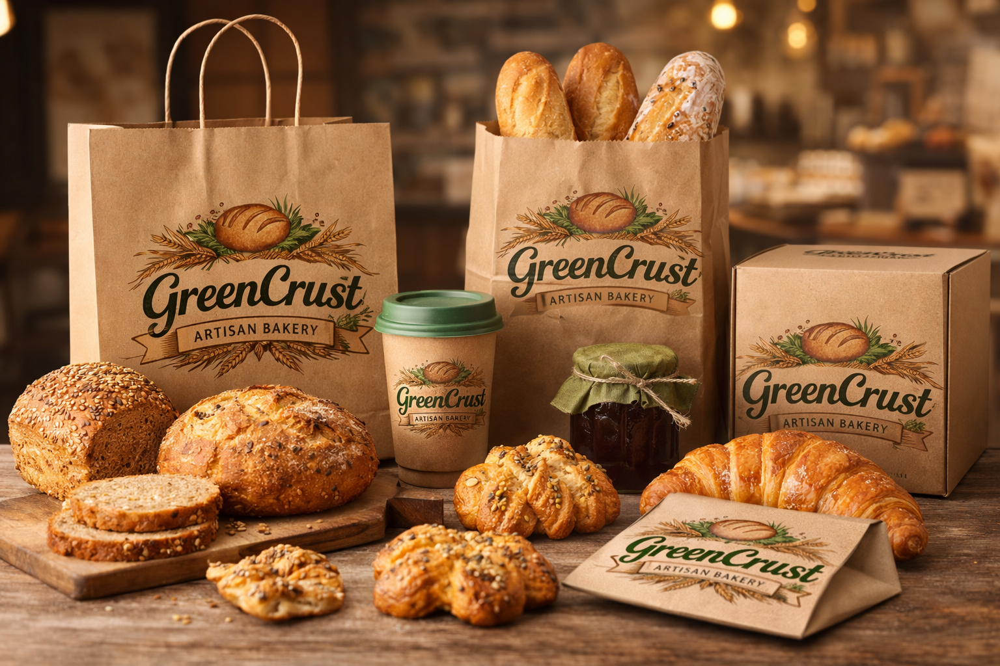

Welcome to GreenCrust Artisan Bakery!

At GreenCrust, we are passionate about crafting delicious, artisanal baked goods using the finest ingredients.
Our bakery is dedicated to providing our customers with a unique and delightful experience through our wide range of products.

Whether you're looking for a fresh loaf of bread, a delectable pastry, or a custom cake for a special occasion, GreenCrust has something for everyone. We take pride in our commitment to quality and sustainability, ensuring that every bite is not only delicious but also environmentally friendly.